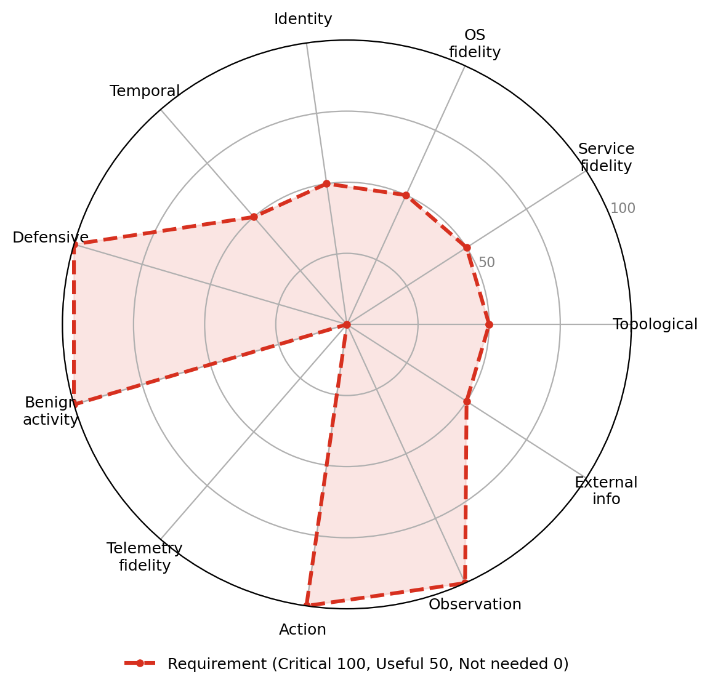

UC-A10 · Operating against agent-targeted deception
A generative attacker agent must reach its objective in an environment that deploys deception aimed at its reasoning rather than only at a mechanism: honeyfiles carrying misleading instructions, canaries, cloaked content, and poisoned external sources mixed with genuine artifacts. The failure mode under test, being steered by deception aimed at reasoning, does not exist for a symbolic policy that never reads content, so this too is generative-AI-specific (ATLAS cognition-targeted deception and masquerading AML.T0074, perception manipulation AML.T0067 and AML.T0134, and poisoned sources AML.T0070 and AML.T0071). Success means reaching the objective within budget while avoiding the traps (not acting on lure instructions, not being steered to canaries), where the deception is semantically coherent so that avoidance reflects reasoning rather than trivial detection, and no oracle marks which artifacts are deceptive. It is distinct from evasive operation (UC-A6), which is about avoiding detection rather than resisting reasoning-level manipulation.

Dimension requirement profile
| Dimension | Requirement |
|---|---|
| Topological realism | Useful |
| Service fidelity | Useful |
| OS fidelity | Useful |
| Identity realism | Useful |
| Temporal dynamics | Useful |
| Defensive realism | Critical |
| Benign activity realism | Critical |
| Telemetry fidelity | Not needed |
| Action realism | Critical |
| Observation realism | Critical |
| External information ecosystem | Useful |
Sub-dimension requirements (all 122 sub-dimensions)
This use case is specified at the sub-dimension level. Counts per dimension (critical / useful / not needed); explore the full checklist in the scorecard.
| Dimension | Critical | Useful | Not needed |
|---|---|---|---|
| Topological realism | 0 | 10 | 0 |
| Service fidelity | 0 | 14 | 0 |
| OS fidelity | 0 | 8 | 0 |
| Identity realism | 0 | 13 | 0 |
| Temporal dynamics | 0 | 11 | 0 |
| Defensive realism | 1 | 2 | 9 |
| Benign activity realism | 1 | 9 | 0 |
| Telemetry fidelity | 0 | 0 | 11 |
| Action realism | 2 | 9 | 0 |
| Observation realism | 3 | 9 | 0 |
| External information ecosystem | 0 | 4 | 6 |